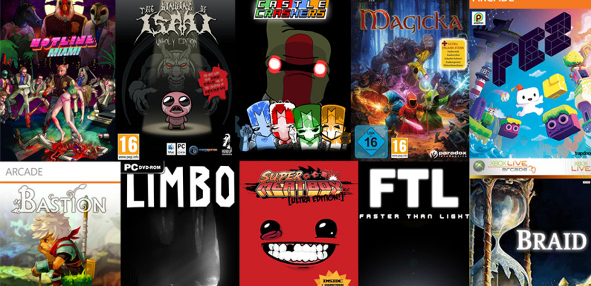

Esta es una pagina te mostramos todas las nuevas noticias de nuevos indies que iran saliendo en los proximos dias.

Los videojuegos independientes (comúnmente conocidos como indie games) son videojuegos creados por individuos o pequeños grupos, sin apoyo financiero de distribuidores. Los videojuegos independientes a menudo se centran en la innovación
y se basan en la distribución digital. Estos han visto un rápido incremento en cantidad y popularidad desde comienzos de 2010 hasta la actualidad gracias a, entre otras cosas, nuevos métodos de distribución en línea y herramientas
de desarrollo, así cómo también el apoyo de una serie de videojuegos que se convirtieron en influencias y referencias que impulsaron la industria.
Paginas donde poder encontrar los nuevos estrenos:
Enlace de descarga de juegos indie